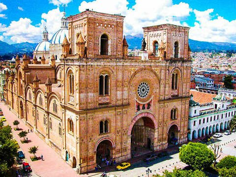

Historia
Un recorrido por los hitos de la ciudad.
Cuenca, capital de la provincia del Azuay, es Patrimonio Cultural de la Humanidad y destaca por su arquitectura colonial, sus ríos y su gastronomía.

Un recorrido por los hitos de la ciudad.
Sitios imperdibles y platos típicos.